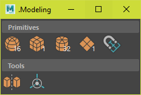

Maya Modeling Tools#
Beveler#
Edit bevel history on the selected mesh.
Run#
from dotbloxmaya.modeling import beveler
beveler.dock.show()
.Modeling#
One window for primatives, mirrorer and pivoting

Run#
from dotbloxmaya.modeling import dotmodeling
dotmodeling.dock.show()
Mirrorer#
Mirror geometry across the world pivot, object pivot or the bounding box
Run#
from dotbloxmaya.modeling import mirrorer
mirrorer.dock.show()
Primatives#
Create a primitive at the selected components
Optionally select a face and move the selected objects

Run#
from dotbloxmaya.modeling import primitives
primitives.dock.show()